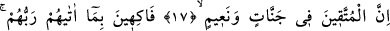
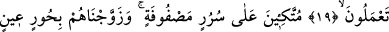
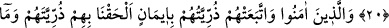
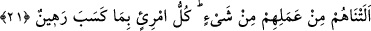

HERKES
KAZANDIKLARINA KARŞI
BİR REHİNDİR
17. Şüphesiz (kötülüklerden) korunanlar cennetlerde ve nimet içindedirler.
18. Rablerinin kendilerine verdikleriyle sevinirler. (Zira) Rableri onları,
cehennem azabından korumuştur.
19. Onlara: Yaptıklarınıza karşılık âfiyetle yeyin, için (denilir).
20. Sıra sıra dizilmiş koltuklara yaslanarak. Ayrıca biz onları, ceylan gözlü
hûrilerle evlendirmişizdir.
21. Îman eden ve soylarından gelenler de, îmanda kendilerine tâbi olanlar (var
ya)! İşte biz, onların nesillerini de kendilerine kattık. Onların amellerinden de bir
şey eksiltmedik. Herkes kazandıklarına karşı bir rehindir.
Küfür ve isyanlardan “korunanlar cennetlerde ve nimet içindedirler.” “Naîm” güzel
ve rahat hayattır. “Nimetlenme” de zenginlik içinde bulunma anlamına gelir. “Naîm”in
isim şekli de “na’met”tir.
Râğıb “naîm”in bol nimet, “tena’um”un da içinde nimet bulunan şeyden alma ve güzel
hayat olduğunu belirtmiş ve na’amehû cümlesinin mânâsını “Onu nimet içinde kıldı, ona
rahat bir hayat sağladı” şeklinde değerlendirmiştir.
el-Bahr adlı eserde “tena’um” kelimesine, içinde nimet ve rahatlık bulunan şeyden;
yiyecek ve giyeceklerden faydalanmak mânâsı verilmiştir. “Cennetlerde ve nimetlerin
içinde” cümlesinden murad, ya tenvini tefhim için varsayıp “cennetlerin herhangi
birinde, nimetlerden istedikleri türlerin verilmesi” şeklinde sıfatının doruğunda
bulunduklarını beyândır. Veya mekanların en şereflisi olarak bildirilen cennetin
muttakîlere tahsis edilmiş olduğunu belirtmek gayesini taşımaktadır. Cennetlerin
muttakîlere tahsis edilmiş olduğunu beyânın sebebi şudur: Bazı kimseler, cennete
girecek kişinin orada ibâdet yapacağını, orayı ıslah edip sâhibi için muhâfaza edeceğini
sanırlar. Üzüm bahçesindeki rençberin orayı ıslah edip koruması gibi. İşte sözkonusu